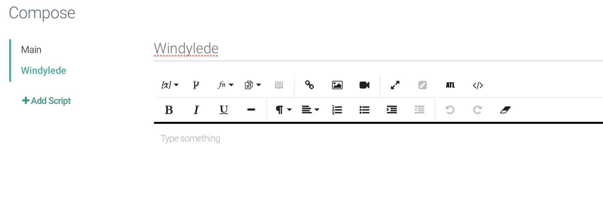
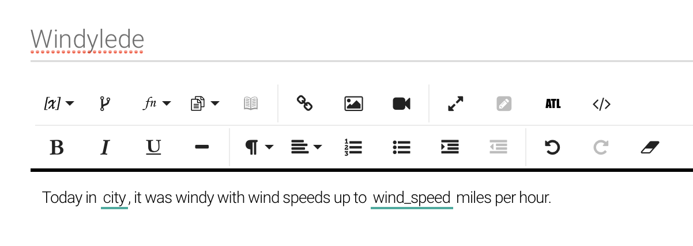
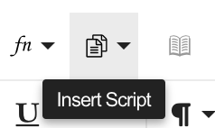
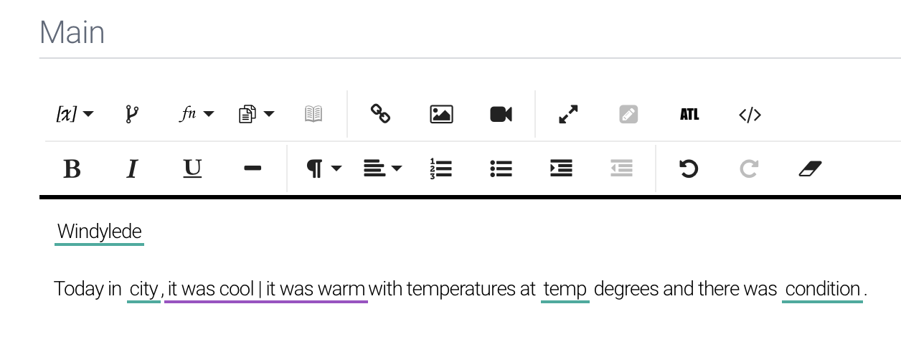
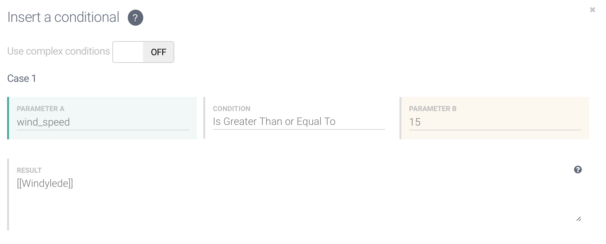
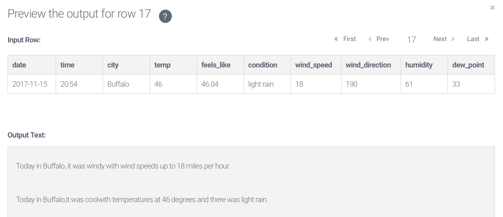
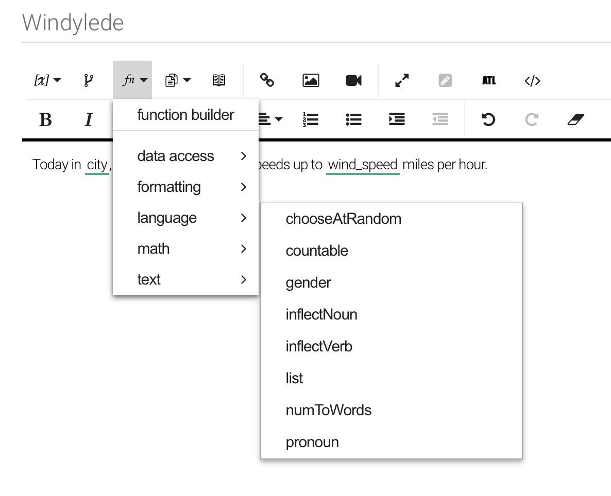
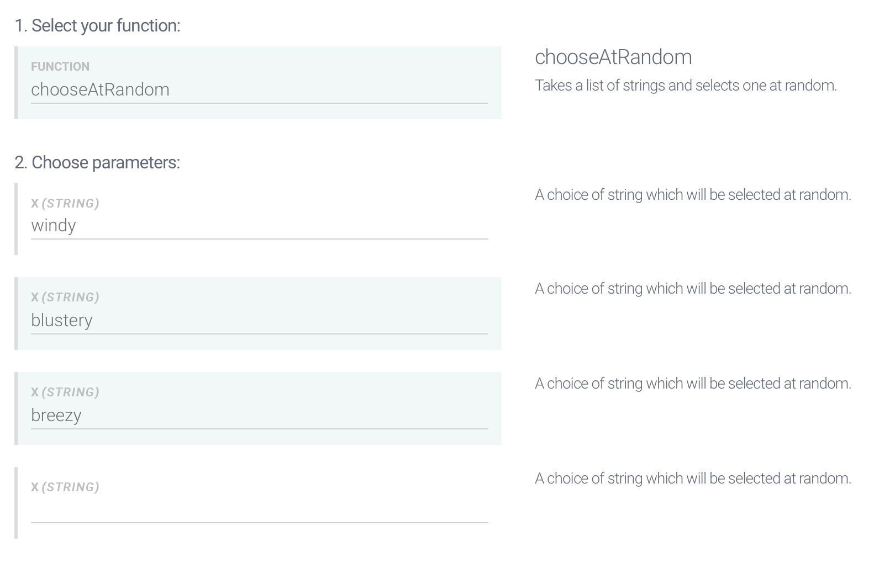
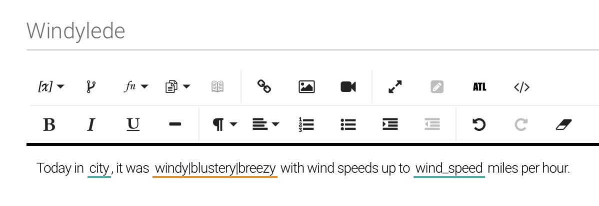
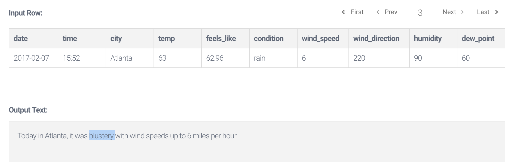

Lesson 3: Building a More Complex Story
- Step 1: Incorporating various scripts into your template
- Step 2: Introduction to using functions
The steps you learned in Lesson 1 and 2 will create a simple yet successful story. Lesson 3 will provide you with more advanced skills in order to create a more sophisticated or complex template. In order to visualize this lesson more clearly, follow along with the video on a clean sheet of paper. From there, you can put the steps into your own words, creating a more viable reference sheet for you in the future! Printable reference sheets are available for all the lessons under the Toolkit tab.
Scripts, as we briefly mentioned before, live underneath the Compose heading in the left hand side of your template. If you don’t see the “Compose” heading, make sure you are still in the “Compose” tab at the far left of the screen that is used for navigation.

Scripts are smaller templates that you can insert into your main template; they will not display unless they meet the requirements you specify. Put differently, you can split up one large template into several smaller pieces, and these pieces are called scripts. Let’s break this down.
We have our example from Lesson 2 handy, but if the city is particularly windy, we want to have a lede that addresses that. Therefore we will head over to the Compose heading and click + Add Script.
"It was windy in Columbia today, with a wind speed of 50 miles per hour."
From there, we will replace our variables with the corresponding label from the “Insert Variable” tab that we used earlier.
At the top, we will give our script a recognizable name. For example, I will replace “NewScript” with “Windylede” at the top of the template. From there, I will begin typing in the template. Here, we are going to insert a sentence from a row, as we did on our first template, that has notable wind to report.
It was windy in Columbia today, with a wind speed of 50 miles per hour.
From there, we will replace our variables with the corresponding label from the “Insert Variable” tab that we used earlier.
It was windy in [city] today, with a wind speed of [wind_speed] miles per hour.
Now, we have created a new template that we will insert into our Main template. To do this, head back to your Main template. There will be a button with two overlapping pages that will provide the “Insert Script” function. You can add the “Windylede” by selecting it from the drop down.
Remember that we only want this lede to display if it is windy in the city, so click Windylede as it is displayed in your template (it should automatically highlight itself once clicked) and click the Insert Conditional button to create a new conditional.
Now, for this example, it is only notable to include the fact that it is windy unless the wind speed is above 15 mph. So, under Case 1 in Parameter A, you will type the variable that will be used to determine if it is necessary to include, which is wind_speed.
Moving to the right to Condition, select Is Greater Than. Then, move to Parameter B and type 15. Right below where you just typed will display “Result” where you will want to type [[Windylede]] since that is what you want to display.
This will allow for the script to only be displayed if the wind speed in your data set is above 15 mph. You have now learned another way to add variety to your stories.
Another way to incorporate variety into your stories is by using functions. We are going to use the example from the previous step to add some variety to our “Windylede” that we created.
To access your Windylede, select the script from the left hand side of your screen underneath the title Compose.
It should look like this:
It was windy in [city] today, with a wind speed of [wind_speed] miles per hour.
From here, we are going to add more adjectives to choose from besides “windy” in order to avoid being repetitive.
First, highlight windy in the template. The select the fn button that will insert a function. From there you will hover over the Language button given to you in the drop down, and select ChooseAtRandom.
A box will open up and it will already have ChooseAtRandom filled into the 1. Function input.
If you look at 2. Parameters, “windy” will already be filled into the first x (string) input. In the following two x (strong) lines, insert the other adjective you want to be included for selection.
I will put “blustery” in the first one and “breezy” in the line below it. Scroll down to the bottom of the box to click “Insert” and the new sentence will look like this.
It was windy|blustery|breezy in city today, with a wind speed of wind_speed miles per hour.
 Please make sure you are able to answer the following questions before moving on to the next lesson:
Study Questions
-If you break your main template up into several smaller pieces, what are those pieces referred to as?
-What icon on the tool bar allows you to insert a script?
-What does a parameter allow you to do